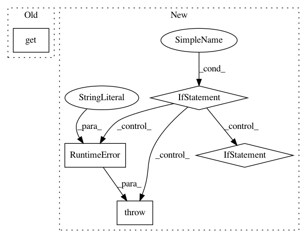

0cd42478586c9cb1febb6b76eea068aac8869a1e,sacred/ingredient.py,Ingredient,__init__,#Ingredient#Any#Any#Any#Any#,38
Before Change
_caller_globals = _caller_globals or inspect.stack()[1][0].f_globals
mainfile_name = _caller_globals.get("__file__", ".")
self.base_dir = os.path.dirname(os.path.abspath(mainfile_name))
self.doc = _caller_globals.get("__doc__", "")
self.mainfile, self.sources, self.dependencies = \
gather_sources_and_dependencies(_caller_globals)
if self.mainfile is None and not interactive:
raise RuntimeError("Defining an experiment in interactive mode! "
After Change
if self.mainfile is None and not interactive:
raise RuntimeError("Defining an experiment in interactive mode! "
"The sourcecode cannot be stored and the "
"experiment won"t be reproducible. If you still"
" want to run it pass interactive=True")
// =========================== Decorators ==================================
@optional_kwargs_decorator
def capture(self, function=None, prefix=None):
Decorator to turn a function into a captured function.
The missing arguments of captured functions are automatically filled
from the configuration if possible.
See :ref:`captured_functions` for more information.
If a ``prefix`` is specified, the search for suitable
entries is performed in the corresponding subtree of the configuration.
if function in self.captured_functions:
return function
In pattern: SUPERPATTERN
Frequency: 3
Non-data size: 5
Instances
Project Name: IDSIA/sacred
Commit Name: 0cd42478586c9cb1febb6b76eea068aac8869a1e
Time: 2018-01-24
Author: dismaldenizen@gmail.com
File Name: sacred/ingredient.py
Class Name: Ingredient
Method Name: __init__
Project Name: ray-project/ray
Commit Name: 415be78cc0d1275a29d0ceda550d0d7a7a5224ea
Time: 2020-09-08
Author: amogkam@users.noreply.github.com
File Name: python/ray/util/sgd/torch/training_operator.py
Class Name: TrainingOperator
Method Name: train_epoch
Project Name: stellargraph/stellargraph
Commit Name: 1dbc4bf21b2f67189f3a0c761a774ccaadb47587
Time: 2018-07-26
Author: docherty@gmail.com
File Name: stellar/mapper/node_mappers.py
Class Name: GraphSAGENodeMapper
Method Name: __init__